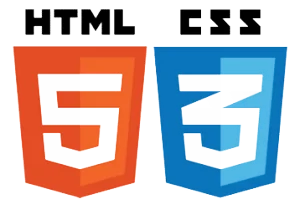
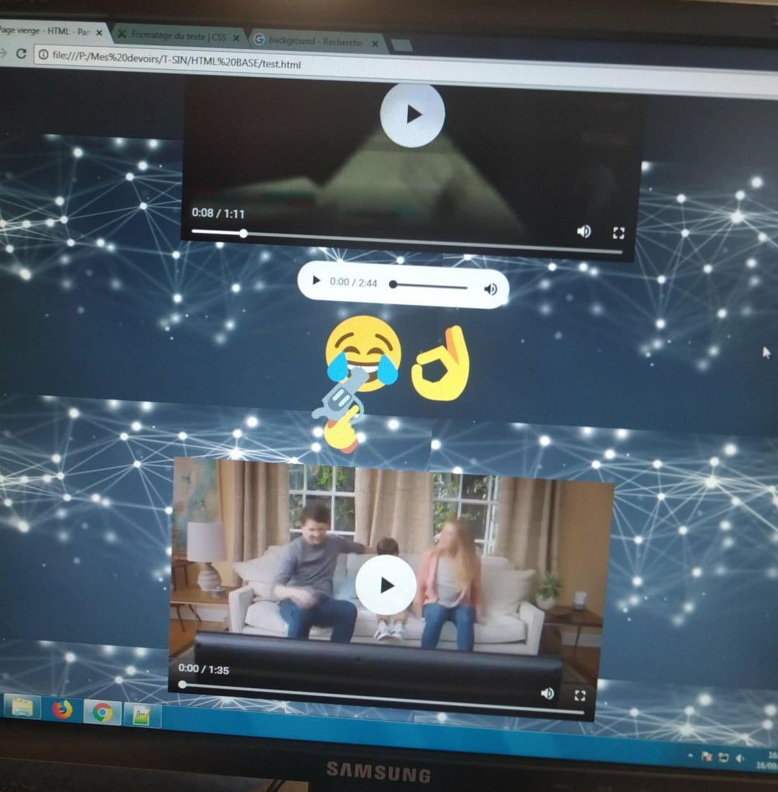
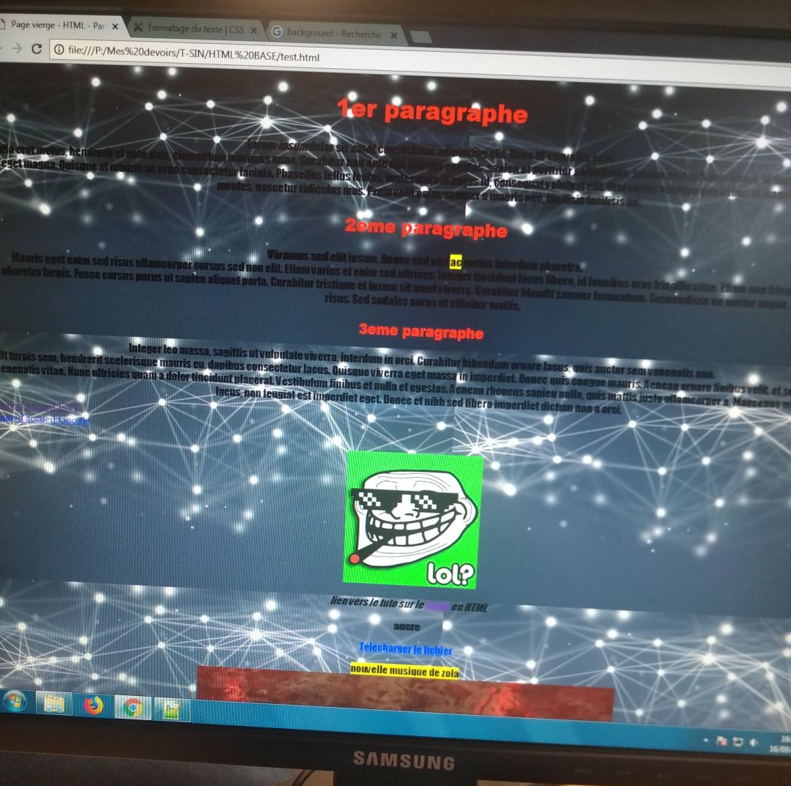
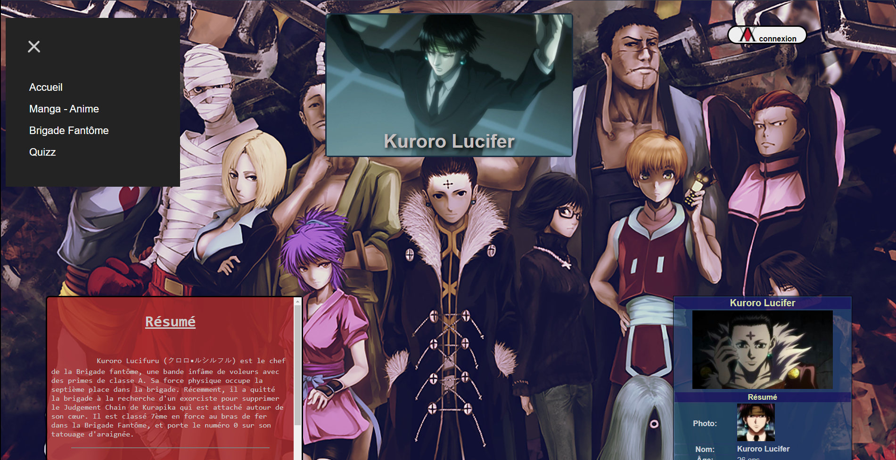
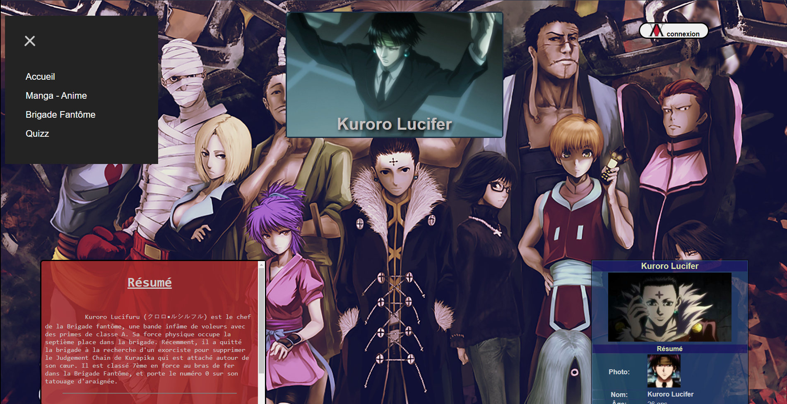
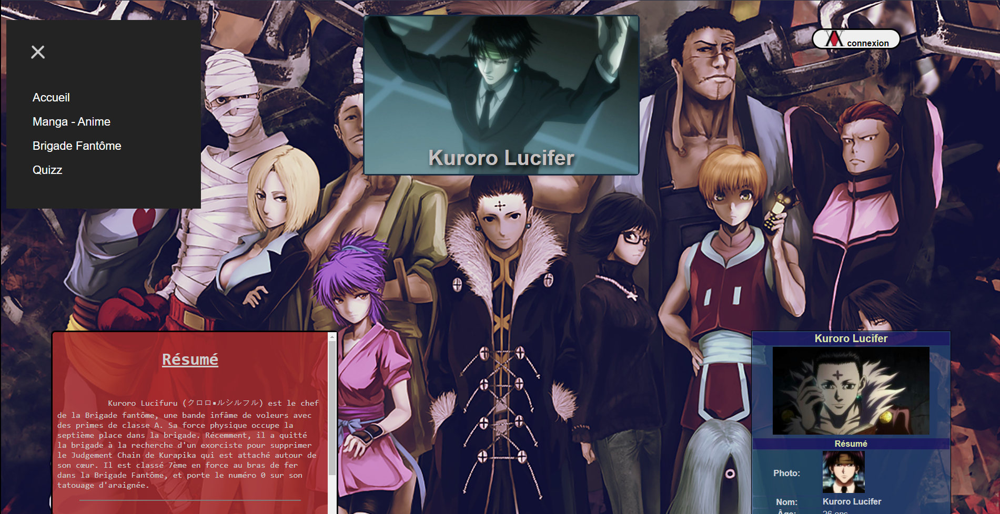

Je me nomme Berneuil Justin, j'ai 21 ans et je souhaite travailler dans le domaine de l'informatique. Je suis actuellement étudiant à l'université de Tours, dans la ville de Blois. De nature curieuse, je m'intéresse à énormément de domaines tels
que les sciences, la musique, le cinéma et bien d'autres encore !
Études & Diplômes
Titulaire d'un bac STI2D (Sciences et Technologies de l'Industrie et du Développement Durable) spécialité SIN (Système d'Information et Numérique), j'ai d'abord fait une première année dans le supérieur dans une licence en mathématiques et informatique,
avant de me réorienter vers un BUT (Bachelor Universitaire de Technologie) Réseaux et Télécommunications.
Compétences
J'ai commencé à m'intéresser au développement web en terminale, pour simple utilité, histoire d'avoir une bonne note. Dès lors, je me suis intéressé à ce domaine, plus comme une passion que comme une vocation. J'ai pu affiner mes connaissances
lors de ma première année en licence, en travaillant surtout sur le design de mes sites.
Je suis donc compétent dans l'utilisation de l'HTML5 mais aussi du CSS3, qui sont les seuls languages utilisés pour réaliser ce site. Je aussi quelques notions en JavaScript que j'ai d'ailleurs utilisé pour faire un easter egg. De plus, je
connais aussi le PHP et le SQL, et j'ai des compétences dans l'administration de serveur MySQL et Apache, nécessaire pour faire fonctionner un site web. Tout cela sera illustré dans la section suivante avec les projets que j'ai pu réaliser.

75%
45%
70%
65%
Projets
Lors de mes débuts dans la programmation en terminale, comme dit précédemment, j'avais dû faire un site web, il n'est pas en ligne évidemment. Ce n'était pas très esthétique, mais ce qui compter était le code, pas son apparence.

L'année passée, lors de ma licence, j'ai aussi dû en faire un pour un partiel, celui-la aussi n'est pas en ligne. Je me suis quand même amélioré durant cette année, aussi bien sur l'esthétique que sur le plan technique.

Durant cette année en BUT, j'ai aussi eu à faire quelques sites web pour des examens, mais je vais seulement parler du portfolio fait au premier semestre, car celui-ci est en
ligne et donc accessible à n'importe quel moment.
Centre d'intérets
Musique:
J'en écoute tout le temps, de tous les styles, même si j'ai une préfèrence pour celles ayant un message. Celles que j'apprécie particulièrement sont "Conquest of paradise" de Vangelis,
Armstrong de Claude Nougaro, mais aussi des musiques plus urbaines tels que
Fil bleu de Lefa ou encore
l'album V de Vald.


 

 LinkedIn
LinkedIn GitHub
GitHub